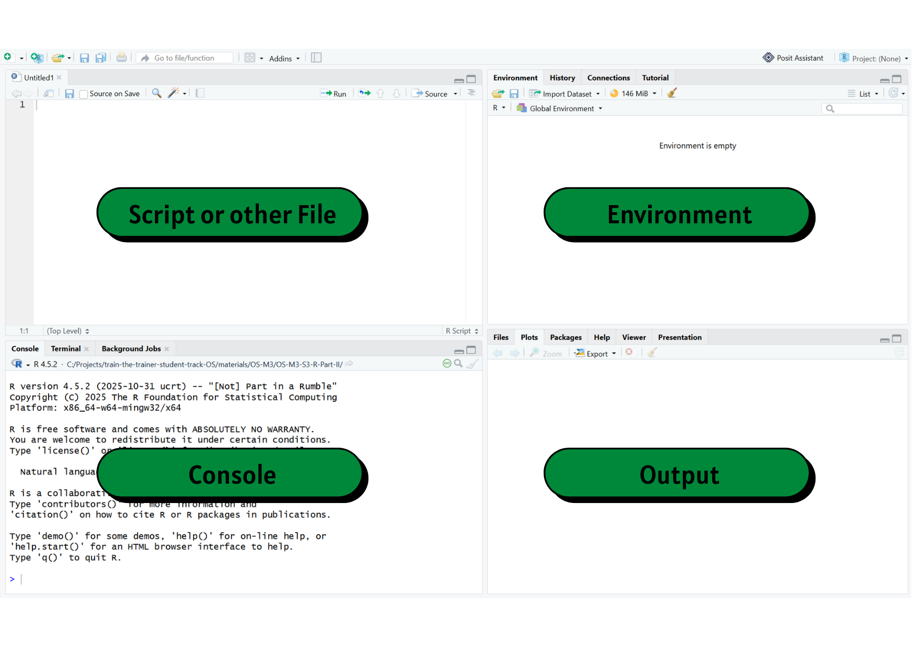
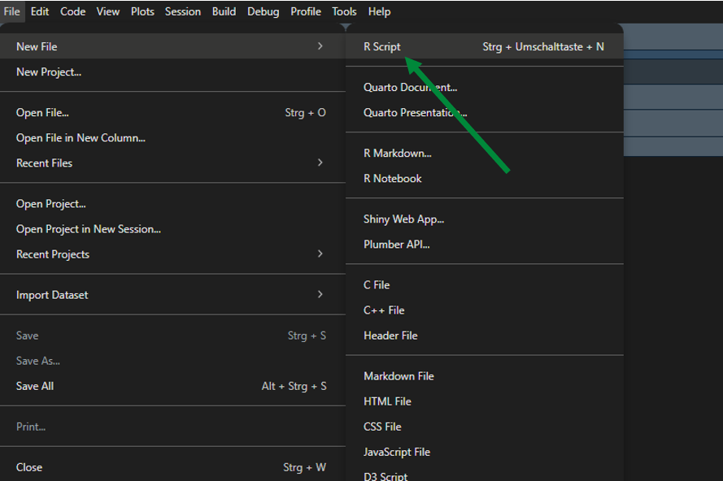
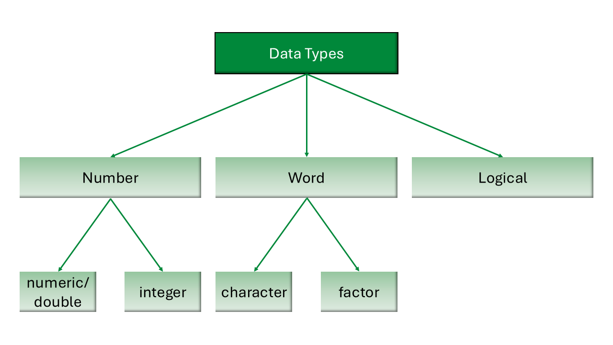
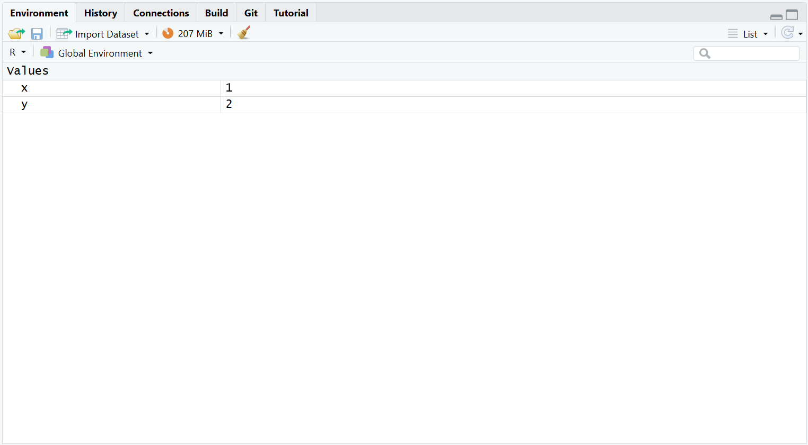
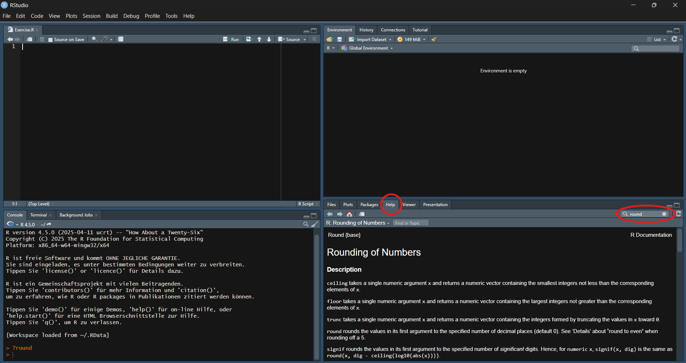

This work was originally created by Nicklas Hafiz and is licenced under a CC-BY-SA 4.0 Creative Commons Attribution 4.0 SA International License. It permits unrestricted re-use, distribution, and reproduction in any medium, provided the original work is properly cited. If you remix, transform, or build upon the material, you must distribute your contributions under the same license as the original. Code snippets are dedicated to the public domain and licenced under a CC0 1.0 Creative Commons Universal Licence.
What is your level of familiarity with R and RStudio?
I have never heard of it before
I have heard of it but have never worked with it
I have basic understanding and experience with it
I am very familiar and have worked with it extensively
On a scale of 1–5, how intimidated do you feel by programming or coding (e.g., R/RStudio)? (1 = Not intimidated at all, 5 = Very intimidated)
1
2
3
4
5
Have you used any programming language (R, Python, JavaScript, C) before?
No, never
Yes, a little (e.g., basic commands)
Yes, moderately (e.g., small projects)
Yes, extensively (e.g., on an almost daily basis)
Discussion of survey results
What do we see in the results?
Learning goals
To navigate the RStudio interface (Console, Environment, Script, and Output panes).
To differentiate between basic data types in R (numeric, character, logical, integer) and how they are used.
To execute operations in the Console and R Script using appropriate operators.
To assign and re-assign values, vectors, and lists to objects.
To specify arguments within functions to modify how the function produces its output.
To index dataframes to access and retrieve specific information.
Key terms and definitions
You might see some words for the first time or some familiar words used in a different way. What do you associate with the terms below?
RStudio
R command
Run
Comment
Operator
Operation
Key terms and definitions
RStudio: A program that provides an easy-to-use interface for writing and running R code.
R command: A line of code that tells R to do something.
Run: To execute an R command so that R carries out the instruction and shows the result.
Comment: Text in your code (starting with #) that R ignores. You can use this function to explain what the code does or make notes throughout your work.
Operator: A symbol (such as +, -, *, <, or ==) that tells R to perform a specific action.
Operation: The action performed using one or more operators on data or values.
Originally designed by statisticians for statisticians
Wide range of applications: data manipulation, visualization, interactive web applications, generation of full manuscripts and reports
Why R?
Knowledge of statistical software like R is useful when conducting quantitative research
Has a large online support community
Provides freely available resources
The RStudio environment

Open RStudio and check if you can see everything that’s on the slide.
(You might only see three panes on your screen)
Mathematical operations
Symbol
Operation
+
Addition
-
Subtraction
*
Multiplication
/
Division
^
Exponentiation
sqrt()
Square Root
log()
(Natural) Logarithm
Practical exercise 1
Using the table on the previous slide, run the following math operations directly in the Console of RStudio.
Let’s use the Console!
You can run code from the Console by typing in the Console and then pressing Enter on your keyboard.
The R script
An R script is a text file containing your R commands.
It is an easy way to save and share code
You can run code from an R script by:
Pressing Ctrl + Enter (Windows) OR Command + Enter on a (Mac) on the keyboard
click on Run
You can also add comments or notes to your code by using #
# Here is an example of using a comment # sum up two numbers 4+5
[1] 9
Creating a new R script

Saving an R script
Step 1: On your device
Decide where this R script should go
Create a new folder
Step 2: In RStudio
After making a new R script, click on File → then click Save As...
→ Name the file → then choose the designated folder
→ Click Save
Practical exercise 2
# This is my practice R Script
Logical comparisons
With R, you can also:
Check if two numbers are equal or unequal
Check if a number is larger or smaller than another number
# Example 1:49==50
[1] FALSE
# Example 2:49<50
[1] TRUE
R returns a logical value:
TRUE or FALSE
Logical comparisons - operators
Symbol
Operation
==
Equals
!=
Not Equal
> and <
Greater and Lesser Than
>= and <=
Greater Than or Equal / Less Than or Equal
&
logical AND
|
logical OR
!
logical NOT
Practical exercise 3
TRUE or FALSE?
(36+5)>40(4==5) | (25>17)(5== (2+3)) & (7>=8)
Data types
Data types define what kind of values you are working with

Data types
These determine how R stores and processes data
Data types can show different behavior across different operations
Examples:5# number (integer)3.14# number (numeric)"hello"# characterfactor("brown") # factorTRUE# logical
Data types: Operations
Can R perform the same operation on different data types?
Two numeric variables can be summed up:
4+5
[1] 9
A numeric and a character variable cannot be summed up:
4+"5"
Error in `4 + "5"`:
! non-numeric argument to binary operator
Objects and assignment
Objects and assignment
Everything in R is an object, and oftentimes, we want to work with an object repeatedly.
Assign a value to an object using the assignment arrow <-
x <-1y <-2# The example assigns the value 1 to the object "x" # and the value 2 to the object "y"
The assignment arrow points to the object
Take note of the order: we put the variable or object name first, then the assignment arrow <-, and lastly the number or value. The arrow should be pointing the object- it would not work if you put 1 <- x
Objects and assignment
The object then appears in the Environment pane (top right pane).

Practical exercise 4
Try following the example and create your objects!
Objects and assignments
Okay, I made objects… what now?
Assigning objects helps organize your values
Call on them and use specific objects in new operations
x <-1y <-2# In a previous slide, we assigned values to the objects# Now, let's call on the objects and add them togetherx + y
[1] 3
Practical exercise 5
Let’s use the objects in a new operation:
x + y
Object reassignment
When you reuse an object name and assign it a new value, R overwrites the previous value.
Functions
What is a function?
A function is a reusable block of code that performs a specific task.
You provide input values (arguments), and R returns an output based on internal operations.
Analogous to a mathematical function:
If f(x) = 2 * x, then inputting x = 3 returns 6.
Every function has a unique name, followed by parentheses (), such as sum().
# Example of a function taking multiple inputssum(1, 2, 3, 4)
The c() function
Group items with the c() function to manipulate multiple items at once.
# Example 1: Combine four numbers into one objectage <-c(19, 20, 21)# Now we can apply a function to the entire groupsum(age)
[1] 60
# Example 2: Combine four character values into one objectfood <-c("Pizza", "Pasta", "Burger", "Pasta")# Now we can organize all the items in this object in a frequency tabletable(food)
food
Burger Pasta Pizza
1 2 1
Common built-in functions: Numeric
R comes with many built-in numeric functions:
Function
What it does
sum()
Adds all values together
mean()
Calculates the arithmetic mean (average)
sd()
Calculates the standard deviation
exp()
Calculates the exponential function (\(e^x\))
round()
Rounds a number
Practical exercise 6
Common built-in functions: Character
R also comes with many built-in character functions:
Function
What it does
sort()
Sort values in alphabetical order
unique()
Shows the unique values in the set
table()
Counts the values in a table
toupper()
Transforms all the letters to uppercase
tolower()
Transforms all the letters to lowercase
Function arguments
Most functions take multiple arguments (inputs).
Arguments are the pieces of information a function needs to carry out an operation.
Different functions expect different types and numbers of arguments, and the output of a function often depends on the arguments that are supplied.
It might look something like this: function_name(argument1 = x, argument2 = y)
Do all functions need multiple arguments?
No, not all functions need multiple arguments, but for some, it is required.
Function arguments
Example: The round() function
This function uses two arguments: It approximates a number (x) to a specified amount of decimal places (digits).
You can provide arguments by position or by name.
# By position (R assumes the first number is x, the second is digits)round(3.14159, 2)# By name (explicitly telling R which argument is which)round(x =3.14159, digits =2)
Naming your arguments makes your code easier to read!
If you name the arguments (using the names “x” and “digits”), the order does not matter: round(digits = 2, x = 3.14159) works identically.
Practical exercise 7
Ignoring the digits argument
If you are curious, try running the round() function without specifying the digits = argument. What happens? Why might that be?
Pre-break quiz
1. What does the # symbol do in R?
Runs the code
Creates a variable
Starts a comment
Multiplies numbers
2. What happens when you “run” code in R?
The code is deleted
R executes the command
The code becomes a comment
RStudio closes automatically
3. What will R return for this comparison?
49 < 50
TRUE
FALSE
49
ERROR
4. Which of the following is a character value in R?
TRUE
5
“hello”
4.2
5. Why does the following produce an error?
4 + "five"
“five” is a logical value
The quotation marks are incorrect
4 is not numeric
R cannot numerically add different data types together
Break! 15 minutes
Post-break quiz discussion
What do we see in the results?
The Help function
Do I have to memorize all of the functions and arguments?
No!
There is no need to memorize functions and their arguments.
You will remember the ones you use frequently through practice.
When you need to understand how a function works, what inputs it needs, or what its defaults are, you can consult the Help Function.
How to access Help in R
There are two main ways to look up a function.
Method 1: Using the Console
Type a question mark ? into the console immediately followed by the function name and press Enter.
# Example: Getting help with using the round() function?round
How to access Help in R
Method 2: Using the Help Tab
Navigate to the Help tab in the bottom right pane of RStudio and type the function name into the search bar.

Reading the documentation
Help pages can look intimidating, but you only need to focus on a few key sections:
Description: A brief summary of what the function does.
Usage: Shows the function with all arguments. This is where you see default values.
Arguments: Detailed explanations of what each input to the function should look like.
Reading the documentation
Example: For the sort() function we can see that it can also use character vectors or values as input and orders them.
Think of a dataframe like a spreadsheet. The top row is the heading and the information below (within each column) is the observation corresponding to the heading.
Practical exercise 10
Create a dataframe with the data.frame() function
people_data <-data.frame(name, age, food)
Indexing
What does indexing do? Allows us to access specific parts of our data, such as:
Select individual or multiple values
Access rows and columns in a dataframe
Indexing vectors
Each element in a vector has a position.
age <-c(19, 20, 21)
Position
1
2
3
Value
19
20
21
Indexing vectors
Selecting individual values
Use [ ] to call on a value by its position
# Example 1: Calling on the value in position 1 age[1]
[1] 19
# Example 2: Calling on the value in position 3age[3]
[1] 21
Indexing vectors
Selecting multiple values
You can retrieve more than one value at once.
age[c(1,3)]
[1] 19 21
You can also select a range:
age[1:3]
[1] 19 20 21
Indexing dataframes
Accessing rows and columns in a dataframe
You can call on values directly from the row and column of data frames.
To use indexing, use [ ] and follow this general format:
dataframe[row,column]
# Example 1: Calling the value in row 1, column 1people_data[1, 1]
[1] "Tim"
# Example 2: Calling the value in row 3, column 2people_data[3, 2]
[1] 21
Accessing columns by name
Calling values by using just numbers can get confusing.
Luckily, there is a way to call on the values by column name using the $ operator: dataframe$column_name
Use it to retrieve all values from that specific column
It is easier to read than using column numbers
# Example: Calling on the "name" column within the "people_data" data framepeople_data$name
[1] "Tim" "Tom" "Anna"
Combining $ and []
Look at the following example to see how $ and [ ] can be used together:
people_data$food[3]
[1] "Pasta"
What does this do?
$ selects the food column in the people_data data frame
[] gives you the third value
Practical exercise 11
Use $ and [] accordingly to retrieve the following information from the the people_data data frame:
Wrapping Up
Looking into the future
Take a minute to think about the following questions, first for yourself, then in a pair:
Can you identify some practical benefits of using R/RStudio?
What obstacles do you anticipate in using it consistently?
How can R/RStudio support you in your upcoming projects?
Share your thoughts with the group.
Assignment: Consolidating what you learned
Create a short R script that builds on what was covered today
Assign at least two objects, for example numbers or words.
Create at least one vector using c() and assign it to an object.
Perform at least one mathematical operation using an object with numerical values. Use at least one built-in function, such as sum(), mean(), length(), sort(), or table().
Use at least one logical comparison to check a condition.
Practice indexing by retrieving one specific value from a vector using [].
Include clear comments using # to explain each step.
Self-Assessment
Use this assignment to assess your learning of, and progress with, R/RStudio; reflect on any challenges you faced and how you overcame them.
Take-home messages
R → your go-to tool for data analysis and quantitative research.
RStudio interface → helps you organize code, outputs, and data efficiently.
Writing and saving R scripts ensures your work is reproducible and well-documented.
Learning goals: Check-In
Where are we at?
To navigate the RStudio interface (Console, Environment, Script, and Output panes) ✅
To differentiate between basic data types in R (numeric, character, logical, integer) and how they are used ✅
To execute operations in the R using appropriate operators ✅
To assign and re-assign values, vectors, and lists to objects ✅
To specify arguments within functions to modify how the function produces its output ✅
To index dataframes to access and retrieve specific information ✅
To conclude: Survey time!
1. On a scale of 1–5, how intimidated do you feel by programming or coding (e.g., R/RStudio) after completing this session? (1 = Not intimidated at all, 5 = Very intimidated)
1
2
3
4
5
2. How confident do you feel using the RStudio environment after this session?
Not confident at all
Slightly confident
Moderately confident
Very confident
Extremely confident
3. How comfortable do you feel about using R and RStudio for mathematical operations?
Not comfortable at all
Slightly comfortable
Moderately comfortable
Very comfortable
Extremely comfortable
3. How comfortable do you feel using R objects (e.g., vectors and data frames) to organize and manipulate your research data?
Not comfortable at all
Slightly comfortable
Moderately comfortable
Very comfortable
Extremely comfortable
3. What part of the lesson, if any, still feels confusing or unclear?
4. Was there a practical exercise or example that helped your understanding the most? Why?
Discussion of survey results
What do we see in the results?
Thanks!
See you next time!
Practical exercise 1: Solutions
12+17
[1] 29
218/3
[1] 72.66667
357^2
[1] 127449
Practical exercise 2: Solutions
(36+5)>40
[1] TRUE
(4==5) | (25>17)
[1] TRUE
(5== (2+3)) & (7>=8)
[1] FALSE
Practical exercise 6 & 7: Solutions
# Create a vector and assign it to "numbers"numbers <-c(4.4, 14, 5.26, 26)# Try out sum(), mean(), and sd()sum(numbers)mean(numbers)sd(numbers)# Assign the number to "my_number"my_number <-2.4637# Try out exp() and round()round(my_number)round(x = my_number, digits =3)